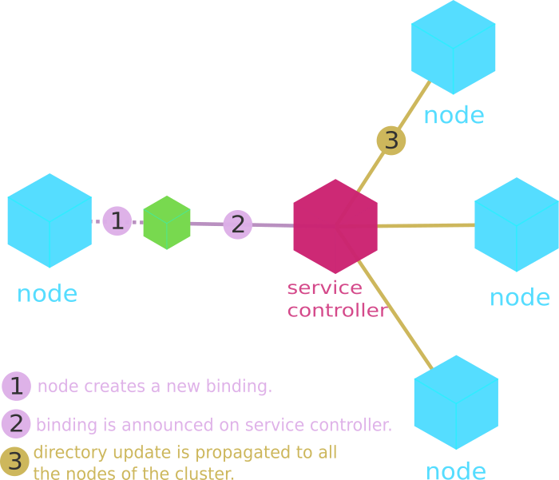

Service Controllers are important elements of n3rv clusters. It is the component that maintain an uptodate direcotry of all the nodes and bindings available on the cluster. Every time a service creates a new binding, it registers it on the service controller, which will in return propagate the direcotry update to all its nodes.
Another role of the service controller can be to distribute topologies to its nodes, for more details see The Topologies section
The service controller communicates with the nodes through 2 distinct zmq sockets:
- A PUB/SUB channel in order to broadcast the directory updates.
- A REQ/REP channel, for the nodes to subscribe their bindings and eventually fetch topologies.
This has one substential implication: service controllers use 2 TCP ports. Also since the n3rv::servicecontroller constructor takes only one port number as an argument, by convention the second channel is opened on port+1.
There are 2 distinct ways to spawn a service controller, both are pretty easy:
The simplest way, it will create a service controller and run it directly in a dedicated thread.
/* Will create and run a service controller listening on port 10001+10002 */
scioctl* sctl = n3rv::start_controller("0.0.0.0",10001);
Note: n3rv::scioctl* objects contain both the running thread pointer and the servicecontroller* pointer.
Again it is quite straightforward:
n3rv::servicecontroller sc1("0.0.0.0",10001);
In order to listen to the nodes subscribing requests and propagate directory updates, a service controller needs to be in running state. if you used n3rv::start_controller() then the controller starts automatically. Otherwise you need to call servicecontroller::run() (blocking) or servicecontroller::run_async() (non-blocking).
/* We start the service controller in a dedicated thread */
sc1.run_async();
If you plan use a service controller with some nodes located outside a NAT and some others inside your network, you will encounter troubles since inside node subscribed with their local IP address. I plan to add better support for NATed network but for now i’m affraid that is an impossible use case.
{kind=link}